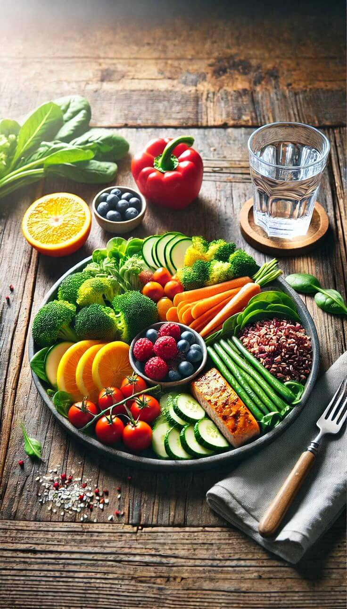

Eating for a Happier Gut: IBS Diet Guide
Living with IBS can feel like walking a tightrope. One day your stomach feels fine, and the next—it’s not. But the good news? What you eat can make a big difference.
This post is a gentle guide to help you understand how diet affects IBS and how you can nourish your body without stress.
💛 What Is an IBS-Friendly Diet?
Irritable Bowel Syndrome (IBS) is a digestive condition that can cause bloating, gas, constipation, diarrhea, and stomach pain. There’s no “one-size-fits-all” diet, but certain foods have been shown to calm the gut, while others may trigger symptoms.
The key is to listen to your body—and take it slow.
🌿 Foods That Are Gentle on Your Gut
1. Low-FODMAP Foods
FODMAPs are specific carbohydrates that are hard to digest. Cutting down on them can give your gut some much-needed relief.
- 🍌 Firm bananas, kiwi, oranges, strawberries
- 🥕 Carrots, spinach, zucchini, bell peppers
- 🍚 Rice, oats, quinoa
- 🐟 Eggs, tofu, chicken, fish
- 🥛 Almond or lactose-free milk
2. Soluble Fiber
This type of fiber helps regulate digestion—especially if you’re dealing with both constipation and diarrhea.
- Oats, chia seeds, psyllium husk
- Cooked carrots and pumpkin
- Applesauce (not raw apples)
🚫 Foods That May Cause Trouble
These foods aren’t bad—they just don’t sit well with sensitive guts. Try avoiding them and reintroduce slowly later.
- ❌ Onions, garlic, cauliflower, mushrooms
- ❌ Apples, watermelon, pears
- ❌ Milk (unless lactose-free), cream, yogurt
- ❌ Caffeine and alcohol
- ❌ Spicy, fried, or processed foods
- ❌ Artificial sweeteners like sorbitol or xylitol
🌸 Small Shifts That Make a Big Difference
- 🍽️ Eat slowly, and in smaller portions
- 🧘 Avoid stress-eating—your gut feels your emotions
- 🧃 Stay hydrated (especially if you’re prone to diarrhea)
- 📓 Keep a food journal—it helps spot patterns
- 🍲 Cook more at home—more control, less guesswork
💫 Final Thoughts
Finding what works for your IBS may take time—but it's a journey worth taking. Be kind to your body, give it space to heal, and celebrate every small win (even if it's just a calm belly after breakfast 🌼).
You're not alone in this—and your gut deserves to feel good.